HyperChill.io
00:00:00
Press 'Start' to start session
00:00:00

Blog
Daily Practices & Protocols to Improve Focus
About
Hello! Welcome to HyperChill.io. My name is Grant and I designed this web app to help myself stay on task while in college. After noticing a phenomenal improvement in my own productivity as a result of this app, I knew it had to be shared with the world.
This web app was intended to be an alternative to the Pomodoro Method. It offers a more flexible and adaptable approach to studying which better takes into account the unpredictability of life. Rather than letting a timer dictate when you can take a break, the stopwatch embedded within this app highlights the amount of time you've spent studying and lets YOU decide when to take a break based on how you're feeling.
How It Works
1. Optional - Set a target time (in hours) that you want for a studying session
2. Press 'Start' to start the session
3. After you've been studying for a while and need a break, press 'Stop' to enter 'Chill Time'
4. Press 'Start' once again to re-enter 'Hyper Focus' mode
5. Repeat steps 3-4 as needed until you're done with the session entirely, at which point you can hit 'End' or 'End Session'
Benefits & Features
Defeat Procrastination:
- 99% of the time, procrastination happens subconsciously. When you hit 'Start' or 'Stop', you're prompted to consciously acknowledge what you're doing so that you don't find yourself having spent 3 out of the past 4 hours on TikTok even though you intended to get all your homework done.
Track your Progress:
- Use the Report feature to explore a graphical representation of your Hyper Focus/ Chill Time intervals for each day, week, and month. Use this information along with the Notes feature to detect patterns and make any necessary changes to maximize productivity.
Discover Tips:
- Visit our Blog page to discover scientifically-informed protocols for maximizing productivity from leading voices such as Andrew Huberman, Sam Harris, and more!
Settings
Alerts & Notifications
Target Time Reached Alert
Break Suggestion Notification
Enter the time (in minutes) you'd like to pass while in Hyper Focus mode before getting a suggestion to take break
Suggestion Minutes: